Ouroboros is an Agent OS for AI coding: a local-first runtime layer that turns non-deterministic agent work into a replayable, observable, policy-bound execution contract. It replaces ad-hoc prompting with a structured specification-first workflow.
"It gets smarter on its own. We just hold the line."
| Layer | Repo | Role |
|---|---|---|
| Shell (terminal client) | Ouro-labs/ourocode | Native terminal UI |
| Apps (domain workflows) | Ouro-labs/ouroboros-plugins | UserLevel plugin contract |
| OS (this repo) | Q00/ouroboros | Agent OS core — Seed, Ledger, Runtime, MCP |

curl -fsSL https://raw.githubusercontent.com/Q00/ouroboros/main/scripts/install.sh | bash# Setup
ooo setup
# Start auto mode
ooo auto
# Interview mode
ooo interview
# Seed architecture
ooo seed
# Execute
ooo run
# Evaluate
ooo evaluate
# Evolve
ooo evolve | Agent | Role |
|---|---|
socratic-interviewer | Clarifies requirements through questioning |
ontologist | Defines precise specifications |
seed-architect | Generates architecture from specs |
evaluator | Grades execution results |
qa-judge | Quality assurance |
contrarian | Challenges assumptions |
Very high relevance — Most sophisticated agent OS for coding.
cloned-repos/ouroboros/
pip install -e . and ooo setup